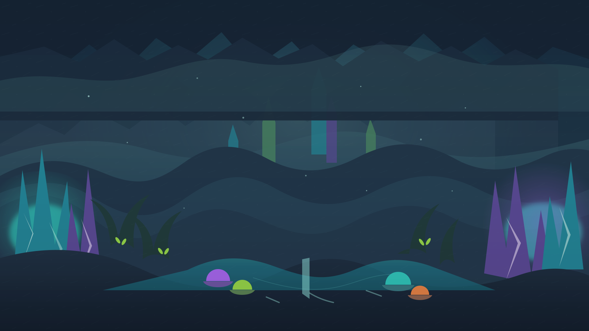

SLUGPEDIA.
REGISTRO DE EXPLORACIÓN · 99 CAVERNAS
Explora un mundo
que nunca imaginaste
bajo tus pies.
Cristales antiguos, ríos escondidos y criaturas extraordinarias. Tu aventura empieza bajo tierra.
SEÑAL DE ENERGÍA SLUG DETECTADA
COORDENADAS 99C · PROFUNDIDAD DESCONOCIDA
MÁS ALLÁ DE LA ENTRADA
Un ecosistema entero aguarda en la oscuridad.
ARCHIVO DE EXPLORACIÓN · ZONA 99C
Bestiario Slugpedia
Cada señal revela una nueva especie del mundo subterráneo.
Conectando con la wiki…REGISTROS ACTIVOS
No encontramos babosas con esa búsqueda.
CÁMARA DE RESONANCIA · DESAFÍO 01
Memory Slugs
Sincroniza los cristales. Encuentra las seis parejas ocultas en la caverna.
MISIÓN COMPLETADA · CÁMARA SINCRONIZADA